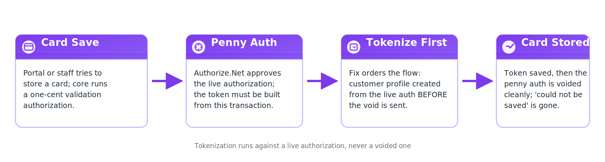
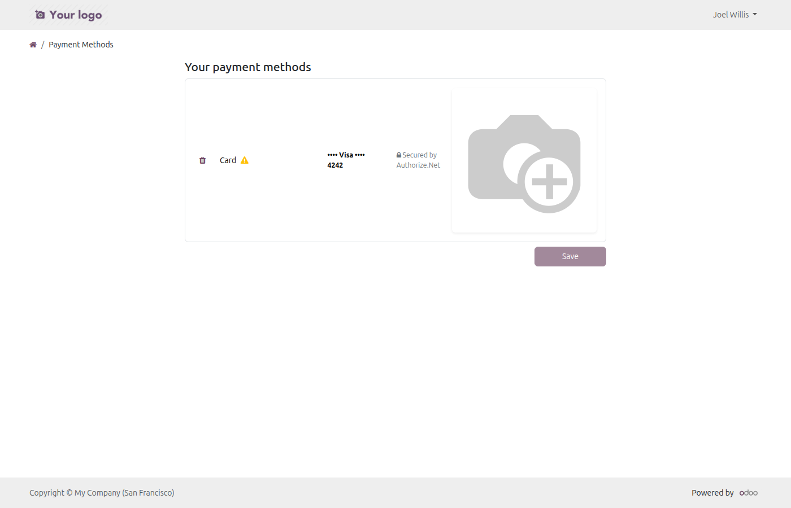
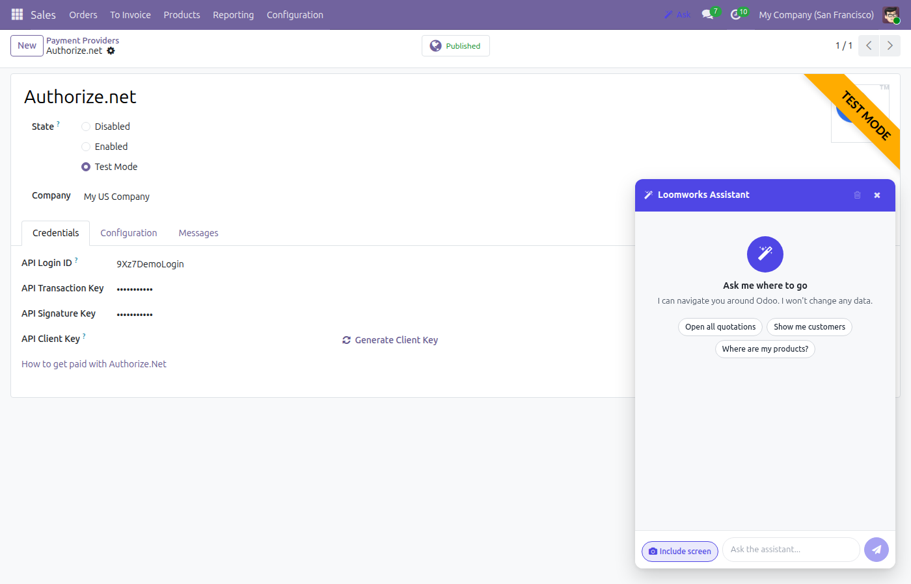
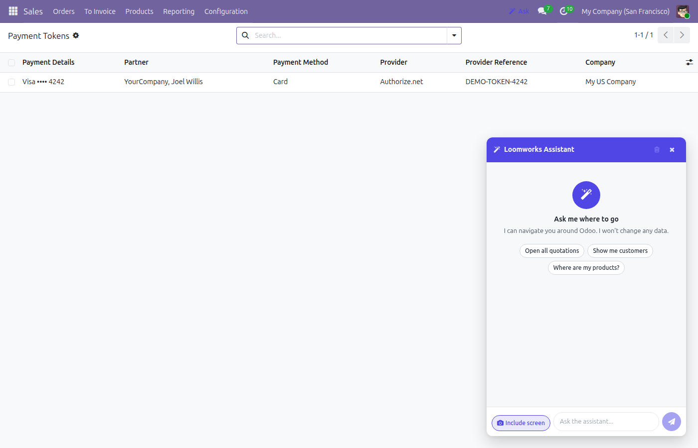
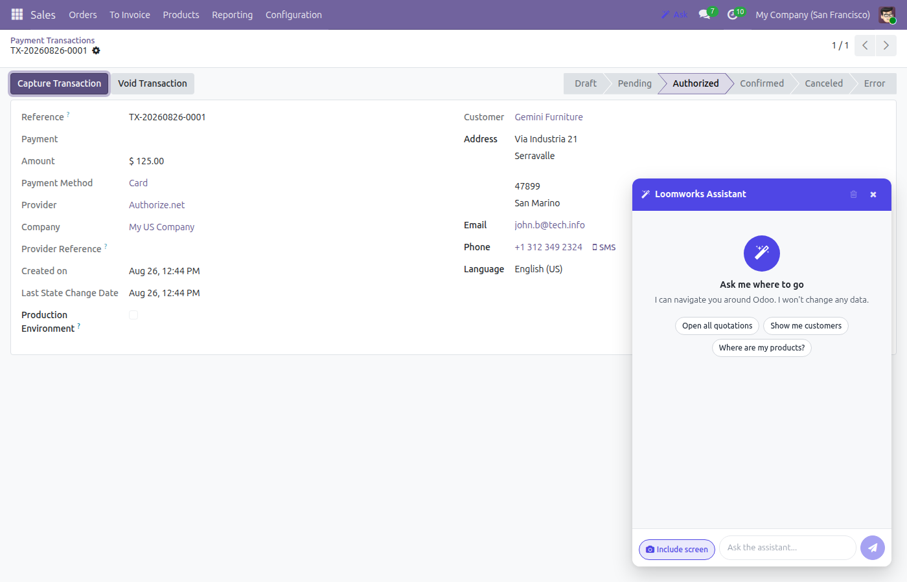

Restore card saving for Authorize.Net — tokenize the validation transaction before the penny authorization is voided.
An upstream fix made validation voids succeed, which broke tokenization — this module tokenizes from the still-active authorization before the void.
create_customer_profile fires before the void request, so Authorize.Net still returns payment data for the profile.
On success the module flips tokenize to False, so the later _process()-driven tokenization is a silent no-op — no duplicate profiles.
A tokenization failure is logged and never blocks the void, so existing behavior is never worse.





Install it like any Odoo module (Apps > Update Apps List, then Install). It works alongside the standard payment_authorize module and needs no configuration — card saving is repaired immediately.
This module is built for Odoo 19.0 (module version 19.0.1.0.0) and is live-tested on Odoo 19 Community Edition.
This module is free on the store. Paid apps on the Odoo Apps Store are covered by the store's refund policy: buyers may request a refund within 14 days of purchase if the app does not work as described.
Questions get a reply within one business day at stephen@loomworks.dev.
Yes. The module runs entirely inside your own Odoo database and collects nothing. It adds no external calls beyond the Authorize.Net transactions your Odoo already makes.
No. Existing saved cards and payment profiles are untouched — the module only repairs the card-save flow itself, and tokenization is idempotent, so no duplicate profiles are created.